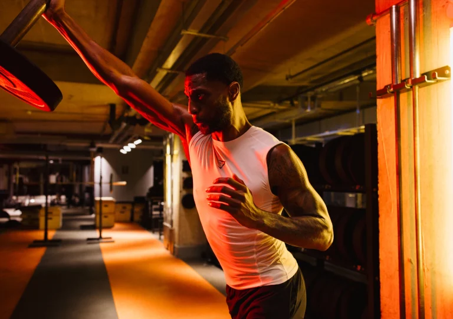

Strength Foundations 60 MIN
Squats, presses, pulls, and deadlifts broken into working sets with a coach correcting form on every rep. Built for lifters who want to add weight to the bar week on week. First-timers get regressions, regulars get load. Moderate to high intensity depending on the block.